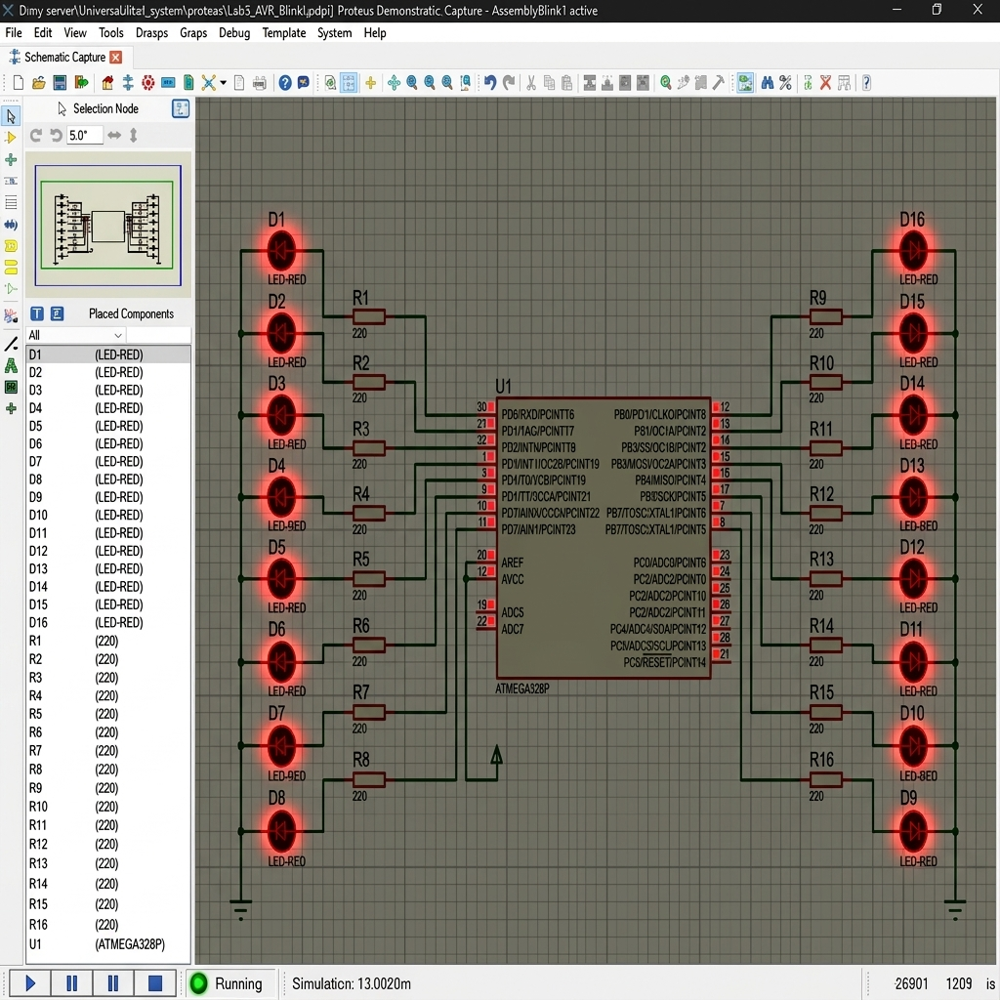
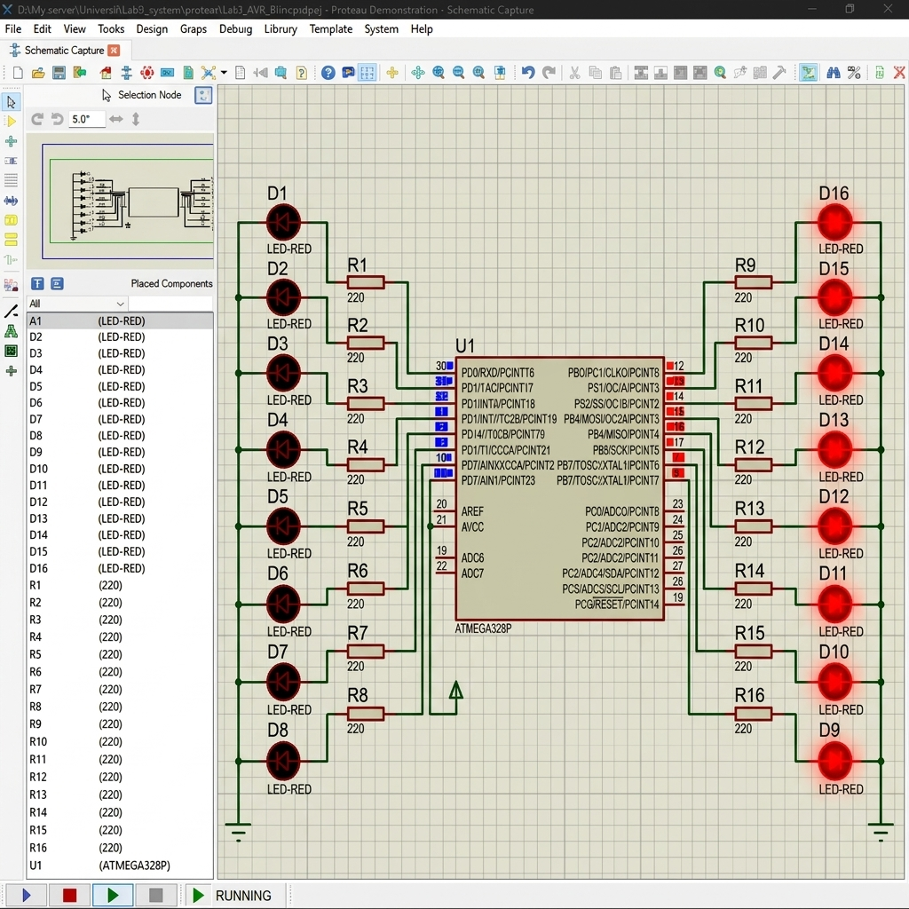
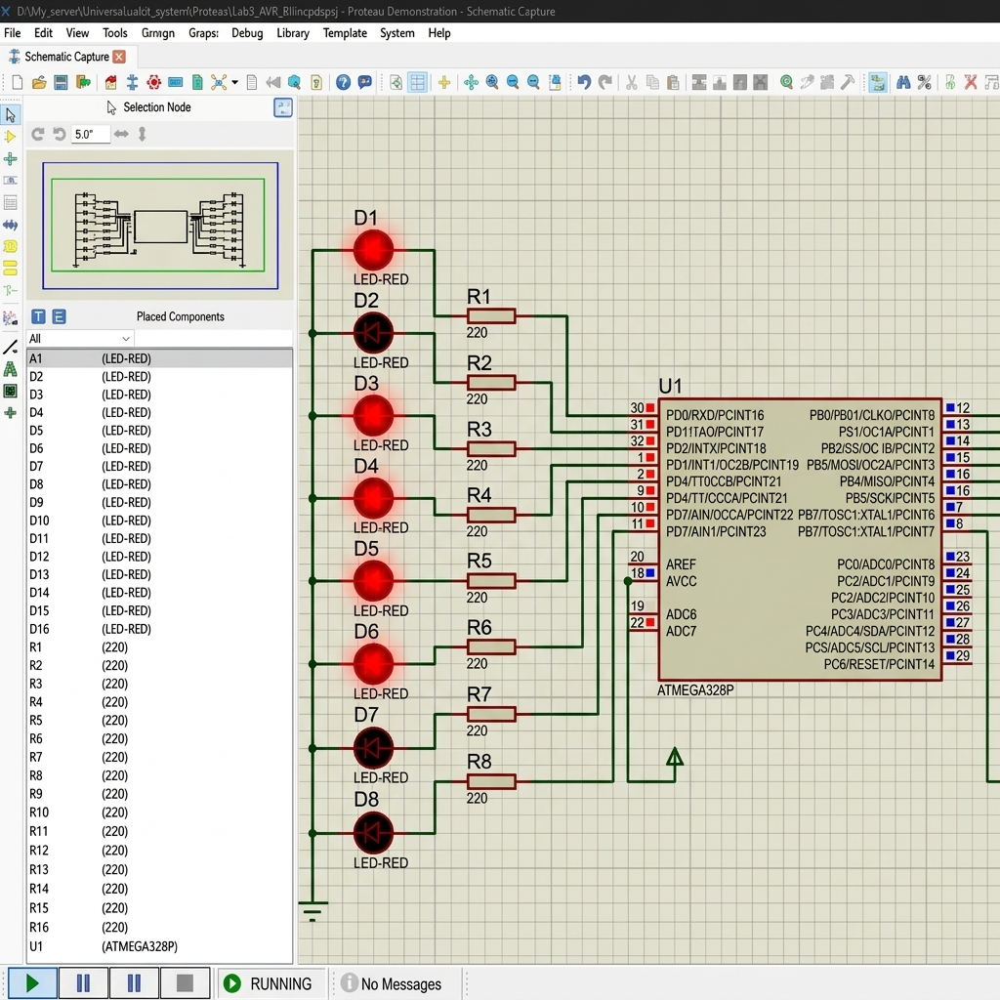

การทดสอบระบบจำลองวงจรและไมโครคอนโทรลเลอร์ AVR
รายวิชา Embedded System Design
1. บทนำ
การพัฒนาโครงงานอิเล็กทรอนิกส์และระบบสมองกลฝังตัวในยุคปัจจุบัน จำเป็นต้องอาศัยซอฟต์แวร์จำลองสถานการณ์ก่อนสร้างต้นแบบจริง เพื่อเพิ่มความเร็วในการทดสอบระบบและลดความเสียหายที่อาจเกิดขึ้นกับฮาร์ดแวร์จริง ซอฟต์แวร์ Proteus VSM (Virtual System Modeling) เป็นเครื่องมือจำลองประสิทธิภาพสูงที่มีบทบาทสำคัญในการทดสอบปฏิสัมพันธ์ระหว่างซอฟต์แวร์ที่ทำงานบนไมโครคอนโทรลเลอร์กับวงจรสัญญาณอนาล็อกและดิจิทัลรอบตัวเสมือนใช้งานบนบอร์ดฮาร์ดแวร์จริง
ในการทดลองนี้ เรามุ่งศึกษาชิปไมโครคอนโทรลเลอร์ AVR รุ่น ATmega328P ซึ่งเป็นแกนประมวลผลขนาด 8 Bit ที่ได้รับความนิยมอย่างแพร่หลาย โดยประยุกต์ใช้งานร่วมกับ Atmel Studio 7 ในการเขียนและพัฒนาซอร์สโค้ดทั้งภาษา Assembly และภาษา C รวมถึงคอมไพล์โค้ดเป็นรหัสเครื่องในรูปไฟล์ประเภท Intel Hex เพื่อป้อนให้กับระบบจำลอง Proteus ต่อไป
2. วัตถุประสงค์ของการทดลอง
1) เพื่อศึกษาและทำความเข้าใจกระบวนการพัฒนาซอฟต์แวร์บน Atmel Studio 7 ทั้งภาษา Assembly และ C
2) เพื่อเรียนรู้ขั้นตอนการต่อวงจรและออกแบบระบบไมโครคอนโทรลเลอร์ ATmega328P บนระบบ Proteus VSM
3) เพื่อทำความเข้าใจวิธีการนำไฟล์สัญญาอนุญาต Intel Hex ไปใช้และตั้งค่า Parameter ต่างๆ ของชิปจำลองในโปรแกรม Proteus
4) เพื่อฝึกทักษะการวิเคราะห์ พัฒนา และแก้ไขโปรแกรมควบคุมไฟกระพริบเพื่อแก้ปัญหาเฉพาะหน้าตามโจทย์ที่ได้รับมอบหมาย
3. เครื่องมือและอุปกรณ์
การทดลองนี้เป็นการปฏิบัติการบนซอฟต์แวร์จำลองคอมพิวเตอร์ทั้งหมด ประกอบด้วยเครื่องมือดังรายการต่อไปนี้:
ประเภท
ชื่อเครื่องมือ / อุปกรณ์
เวอร์ชัน / รายละเอียด
หน้าที่ในการทดลอง
Software IDE
Atmel Studio 7.0
7.0.2389 (Full Package)
ใช้สำหรับเขียนโปรแกรม ประกอบโค้ดภาษา Assembly และ C รวมถึงการ Build และ Debug โค้ด
Software Simulator
Proteus Professional / Demo
9.2.44740 (Demonstration)
ใช้วาดแผนผังวงจรอิเล็กทรอนิกส์และจำลองการประมวลผลระดับสัญญาณเวฟฟอร์มร่วมกับ Hex File
Microcontroller
ATmega328P
8-bit AVR microcontroller (Virtual Model)
ชิปเป้าหมายหลักในระบบประมวลผล
Peripherals
LEDs and Resistors
Active LEDs, Resistors 220 Ω
ชุดทดสอบสัญญาณไฟกระพริบแสดงผลที่พอร์ต I/O ของไมโครคอนโทรลเลอร์
4. แนวคิดการออกแบบและทดสอบ
การควบคุมสัญญาณขาออกของไมโครคอนโทรลเลอร์ ATmega328P เริ่มจากการตั้งค่าทิศทางการไหลของข้อมูลที่ Data Direction Register (เช่น DDRB และ DDRD) เพื่อกำหนดให้ขาแต่ละพินทำงานเป็นพอร์ต Output จากนั้นจึงป้อนระดับลอจิกแรงดันไฟฟ้ากระแสตรงผ่านพอร์ตข้อมูล (เช่น PORTB และ PORTD)
สำหรับในโปรแกรม AssemblyBlink1.asm เราทำการเขียนค่า 0xFF ไปยัง DDRB และ DDRD เพื่อให้พอร์ตทั้งหมดเป็นพอร์ต Output และเขียนโปรแกรมย่อยสำหรับหน่วงเวลา (Delay Subroutine) โดยสร้างโครงสร้าง nested loop 3 ชั้นด้วยรีจิสเตอร์ R20, R21, และ R22 เพื่อให้สัญญาณความถี่ระดับ 16 MHz บนฮาร์ดแวร์หน่วงนานพอที่ตาเปล่าของมนุษย์สามารถสังเกตความถี่การกระพริบได้
ในโปรแกรมเวอร์ชัน C (GccAppBlink1.c) เราได้กำหนดให้ขาของ PORTB พิน PB0-PB5 และ PORTD พิน PD0-PD7 ทำงานเป็น Output และจำลองหน่วงเวลาด้วยโครงสร้างลูปสองชั้นที่ควบคุมค่าความล่าช้าด้วยจำนวนตัวแปรเพื่อสร้างจังหวะกระพริบที่ไม่สมมาตร (ON นานกว่า OFF) ร่วมกับไฟของบอร์ด Arduino บนขา PB5
5. การทำงานส่วนย่อย
วงจรและระบบประกอบไปด้วยโครงสร้างการเชื่อมต่อหลักสองพอร์ต คือ พอร์ต B และพอร์ต D ดังนี้:
1) พอร์ต B (PORTB): ในทางฮาร์ดแวร์ พอร์ต B ของ ATmega328P มีขาสัญญาณใช้งานดิจิทัล 6 พินหลัก (PB0 ถึง PB5) ส่วนขา PB6 และ PB7 มักถูกผูกไว้กับคริสตัลภายนอกในการจับคาบจังหวะสัญญาณนาฬิกา ในโปรแกรมภาษา C จึงต้องกำหนดค่าทิศทาง `DDRB = 0x3F` (บิต 0-5 เป็น Output) เพื่อความปลอดภัยและหลีกเลี่ยงผลกระทบต่อสัญญาณนาฬิกาภายนอก
2) พอร์ต D (PORTD): มีขาสัญญาณใช้งานดิจิทัลเต็มรูปแบบ 8 พิน (PD0 ถึง PD7) ในโปรแกรมจึงสามารถกำหนดให้ทำงานในโหมด Output ร่วมกันทั้งหมดได้โดยการตั้งค่ารีจิสเตอร์ทิศทางเป็น `DDRD = 0xFF` ซึ่งส่งผลให้เราสามารถต่อ LED แสดงสถานะสัญญาณลอจิกได้เต็มพอร์ต
3) วงจรปุ่มรีเซ็ตและชุดสัญญาณนาฬิกา (Reset & Clock Circuit): ในระบบ Proteus ชิปจำลองจะกำหนดค่าความถี่สัญญาณนาฬิกาภายในตัวคุณสมบัติ Component Edit ไว้ล่วงหน้า ทำให้เราไม่จำเป็นต้องต่อ Crystal Oscillator และตัวเก็บประจุภายนอกเข้าขารุ่นทางกายภาพจริงเพื่อลดทรัพยากรการประมวลผลของเครื่องคอมพิวเตอร์ ส่วนปุ่ม Reset จะถูกต่อพูลอัพ (Pull-up) ไว้ที่ระดับแรงดัน VCC เพื่อให้ตัวชิปประมวลผลอย่างต่อเนื่องตลอดเวลา
6. โครงสร้างโปรแกรมและคำอธิบายโค้ด
6.1 รหัสต้นฉบับภาษา Assembly (แบบดั้งเดิม)
โปรแกรม AssemblyBlink1.asm เป็นโค้ดจำลองระบบไฟกระพริบของพอร์ต B และ D แบบสว่างและดับไปพร้อมๆ กันทุกพิน มีรายละเอียดโครงสร้างของโปรแกรมดังแสดงด้านล่าง:
.nolist
.include "m328pdef.inc"
.list
rjmp main
main:
ldi r16, 0xFF ; โหลดค่า 0xFF ลงในรีจิสเตอร์ R16
out DDRB, r16 ; กำหนดให้ PORTB ทุกพินเป็น Output
out DDRD, r16 ; กำหนดให้ PORTD ทุกพินเป็น Output
ldi r16, 0x00 ; ล้างค่ารีจิสเตอร์ R16 เป็น 0x00
loop:
com r16 ; สลับระดับบิตใน R16 (กลับบิต 0 เป็น 1 และ 1 เป็น 0)
out PORTB, r16 ; ส่งค่าใน R16 ออกไปยัง PORTB
out PORTD, r16 ; ส่งค่า in R16 ออกไปยัง PORTD
call MY_DELAY ; เรียกฟังก์ชันหน่วงเวลาก่อนเริ่มงานรอบใหม่
rjmp loop ; วนกลับไปทำงานที่ label loop เสมอ
MY_DELAY:
ldi r20, 8 ; ลูปนอกสุดวน 8 รอบ
L1:
ldi r21, 200 ; ลูปกลางวน 200 รอบ
L2:
ldi r22, 250 ; ลูปในสุดวน 250 รอบ
L3:
dec r22 ; ลดค่า R22 ลง 1
brne L3 ; วนลูปในสุดต่อไปถ้า R22 ยังไม่เป็น 0
dec r21 ; ลดค่า R21 ลง 1
brne L2 ; วนลูปรองต่อไปถ้า R21 ยังไม่เป็น 0
dec r20 ; ลดค่า R20 ลง 1
brne L1 ; วนลูปนอกสุดต่อไปถ้า R20 ยังไม่เป็น 0
ret ; กลับไปยังตำแหน่งเรียกใช้
คำอธิบายโปรแกรมทีละบรรทัด (Line-by-Line Explanation):
คำสั่ง / บรรทัด
คำอธิบายหน้าที่การทำงานอย่างเป็นทางการ
.nolist
ปิดการแสดงข้อมูลของตัวประกอบในไฟล์แสดงการคอมไพล์ (.lss) เพื่อความเป็นระเบียบ
.include "m328pdef.inc"
นำเข้าไฟล์คำจำกัดความของขา พอร์ต และ Memory Map ของชิป ATmega328P
.list
เปิดการแสดงผลประกอบการทำงานปกติหลังอ่านค่าเสร็จสิ้น
rjmp main
กระโดดแบบสัมพันธ์ (Relative Jump) ไปที่ป้ายชื่อ main เพื่อเริ่มต้นกระบวนการประมวลผล
main:
กำหนดป้ายชื่อระบุส่วนเริ่มเขียนโปรแกรมหลัก
ldi r16, 0xFF
โหลดค่าลอจิกสูง 8 บิต (0xFF) เข้าเก็บไว้ใน working Register R16
out DDRB, r16
กำหนดทิศทางข้อมูลพอร์ต B โดยตั้งค่าขาสัญญาณทุกพินเป็น Output ตามค่าใน R16
out DDRD, r16
กำหนดทิศทางข้อมูลพอร์ต D โดยตั้งค่าขาสัญญาณทุกพินเป็น Output ตามค่าใน R16
ldi r16, 0x00
เคลียร์ค่าใน R16 ให้เริ่มต้นที่ 0x00 สำหรับใช้สลับไฟช่วงวนลูป
loop:
ระบุจุดวนซ้ำเพื่อกระพริบไฟอย่างต่อเนื่อง
com r16
ทำ One's Complement (กลับบิต 0 เป็น 1 และ 1 เป็น 0) ของ R16
out PORTB, r16
ส่งระดับแรงดันลอจิกใน R16 ออกไปยังพอร์ตเอาต์พุตพอร์ต B
out PORTD, r16
ส่งระดับแรงดันลอจิกใน R16 ออกไปยังพอร์ตเอาต์พุตพอร์ต D
call MY_DELAY
เรียก subroutine ย่อยหน่วงเวลาเพื่อรอให้ลอจิกแสดงค่านานพอสังเกตได้
rjmp loop
วนกลับไปทำที่ป้ายชื่อ loop เพื่อสลับระดับไฟอย่างต่อเนื่องไม่มีวันสิ้นสุด
MY_DELAY:
ป้ายชื่อ subroutine เริ่มต้นระบบหน่วงเวลาแบบ nested loop 3 ชั้น
ldi r20, 8
กำหนดรอบของลูปนอกสุดทำงานจำนวน 8 รอบ
dec r22 / brne L3
ลดค่าลงทีละ 1 / หากยังไม่เป็น 0 ให้วนกลับมาทำงานที่ L3 ต่อไปจนครบรอบ
ret
คืนค่าตำแหน่งคำสั่งและดึงที่อยู่กลับไปทำงานต่อในส่วนโปรแกรมหลักที่เพิ่งเรียกใช้
Flowchart 1: AssemblyBlink1.asm
START
DDRB = 0xFF, DDRD = 0xFF
R16 = 0x00
loop:
R16 = ~R16 (com)
PORTB = R16
PORTD = R16
call MY_DELAY
rjmp loop
ภาพที่ 3.1 ผังการไหล (Flowchart) ของโปรแกรมไฟกระพริบภาษา Assembly ดั้งเดิม
6.2 รหัสต้นฉบับภาษา Assembly (แบบแก้ไขเพิ่มเติม)
ตามโจทย์ Exercise 1 ใน Procedures II โปรแกรมได้รับการดัดแปลงระบบสลับลอจิกของ PORTB และ PORTD ให้แสดงผลต่างเฟสสลับกัน โดยมีรายละเอียดโค้ดและผังการไหลที่แก้ไขแล้วดังนี้:
.nolist
.include "m328pdef.inc"
.list
rjmp main
main:
ldi r16, 0xFF ; โหลดค่า 0xFF เพื่อเปิดการทำพอร์ต Output
out DDRB, r16
out DDRD, r16
ldi r16, 0x00 ; เริ่มต้นกำหนดให้ R16 เป็น 0x00
loop:
com r16 ; สลับลอจิกใน R16 (0x00 ↔ 0xFF)
out PORTB, r16 ; ส่งค่า R16 ออกไปยัง PORTB (PB0-PB7 จะติด/ดับ ตาม R16)
mov r17, r16 ; คัดลอกค่า R16 ไปยัง R17
com r17 ; สลับลอจิกใน R17 เพื่อสร้างสถานะตรงข้าม
out PORTD, r17 ; ส่งระดับลอจิกที่กลับขั้วแล้วออกพอร์ต D (PD0-PD7 จะกลับด้าน)
call MY_DELAY ; หน่วงสัญญาณการกระพริบ
rjmp loop
MY_DELAY:
ldi r20, 8 ; กำหนดความถี่ปริมาณการหน่วงภายนอก
L1:
ldi r21, 200
L2:
ldi r22, 250
L3:
dec r22
brne L3
dec r21
brne L2
dec r20
brne L1
ret
คำอธิบายโค้ดส่วนที่แก้ไขเพิ่มเติม (Explanation of Modifications):
ส่วนงานดัดแปลงเน้นไปที่ท่อน label loop เพื่อป้อนค่าตรงกันข้ามให้แก่พอร์ตแสดงผลทั้งสองฝั่ง:
คำสั่ง / บรรทัด
คำอธิบายการประมวลผลหลังดัดแปลง
com r16
ทำการ toggle บิตภายใน R16 เพื่อสลับระหว่างสถานะ 0x00 และ 0xFF ในแต่ละรอบสัญญาณ
out PORTB, r16
ส่งระดับลอจิกใน R16 ไปแสดงผลที่พอร์ต B ตรงๆ (ทำให้ไฟพอร์ต B ติด/ดับ ตามค่าของ R16)
mov r17, r16
คัดลอกค่าสถานะของพอร์ต B (R16) ลงรีจิสเตอร์ R17 ชั่วคราวเพื่อนำมาประมวลผลส่วนกลับ
com r17
ทำ One's Complement ใน R17 เพื่อเปลี่ยนระดับบิตให้อยู่ในสถานะตรงข้าม (ตรงข้ามกับ PORTB เสมอ)
out PORTD, r17
ส่งระดับลอจิกใน R17 ออกไปยังพอร์ต D (พอร์ต D จะทำงานสลับกับพอร์ต B ทันทีตามตรรกะที่สลับไว้)
Flowchart 2: AssemblyBlink1_modified.asm
START
DDRB = 0xFF, DDRD = 0xFF
R16 = 0x00
loop:
R16 = ~R16 (com)
PORTB = R16
R17 = R16
R17 = ~R17 (opposite)
PORTD = R17
call MY_DELAY
rjmp loop
ภาพที่ 3.2 ผังการไหล (Flowchart) ของโปรแกรมไฟสลับพอร์ต B และ D ภาษา Assembly ที่แก้ไขแล้ว
6.3 รหัสต้นฉบับภาษา C (งานการบ้าน)
รหัสโปรแกรมไฟกระพริบภาษา C (GccAppBlink1.c) ประกอบด้วยโครงสร้างควบคุมการหน่วงเวลาแบบอสมมาตร และการใช้งานรีจิสเตอร์พอร์ตตามข้อกำหนดในโจทย์การบ้านดังแสดงด้านล่าง:
#include <avr/io.h>
int main(void)
{
unsigned int i, j;
DDRD = 0xFF; // ตั้งค่าพอร์ต D ทุกพิน (PD0-PD7) เป็น Output
DDRB = 0x3F; // ตั้งค่าพอร์ต B พิน PB0-PB5 เป็น Output (0b00111111)
// ลูปหน่วงเวลาเริ่มต้น 1 รอบ
for (j = 0; j < 1; j++)
{
for (i = 0; i < 42150; i++)
{
// หน่วงเวลาเริ่มต้น
}
}
PORTD = 0x00; // ล้างค่าสัญญาณ PORTD เริ่มต้นเป็น LOW
PORTB = 0x00; // ล้างค่าสัญญาณ PORTB เริ่มต้นเป็น LOW
while (1)
{
PORTD = 0xFF; // ป้อนสัญญาณ HIGH ออกพอร์ต D
PORTB = PORTB | 0b00100000; // ตั้งค่าบิตที่ 5 (PB5) เป็น HIGH
// หน่วงเวลาช่วงเปิดไฟ 5 คาบ
for (j = 0; j < 5; j++)
{
for (i = 0; i < 42150; i++)
{
// หน่วงเวลาระหว่างติดไฟ
}
}
PORTD = 0x00; // ป้อนสัญญาณ LOW ออกพอร์ต D
PORTB = PORTB & ~0b00100000; // ตั้งค่าบิตที่ 5 (PB5) เป็น LOW
// หน่วงเวลาช่วงดับไฟ 2 คาบ
for (j = 0; j < 2; j++)
{
for (i = 0; i < 42150; i++)
{
// หน่วงเวลาระหว่างดับไฟ
}
}
}
return 0;
}
คำอธิบายโครงสร้างโปรแกรมภาษา C (C Program Structure Explanation):
โปรแกรมภาษา C อาศัยการเข้าถึงพอร์ตข้อมูลผ่าน Register ของคอมไพเลอร์ avr/io.h ดังนี้:
โครงสร้าง / คำสั่ง
คำอธิบายทางวิชาการ
#include <avr/io.h>
โหลดไลบรารีสําหรับเข้าถึง Input/Output Register ทางกายภาพของไมโครคอนโทรลเลอร์ AVR
DDRD = 0xFF; / DDRB = 0x3F;
DDRD = 0xFF ตั้งค่าทุกพินของ PORTD เป็น Output; DDRB = 0x3F ตั้งค่าพิน 0 ถึง 5 (PB0-PB5) ของ PORTB เป็น Output
PORTB | 0b00100000
การทำ bitwise OR เพื่อบังคับเขียนลอจิกเป็น HIGH เฉพาะที่บิต 5 (PB5) โดยรักษาสถานะดั้งเดิมของบิตอื่น
PORTB & ~0b00100000
การทำ bitwise AND กับบิตกลับขั้ว เพื่อล้างลอจิกเป็น LOW เฉพาะที่บิต 5 (PB5) เท่านั้น
for (j = 0; j < 5; j++) ...
สร้างลูปหน่วงเวลาซ้อน โดยลูปในรันจำนวน 42,150 รอบ คาบเวลารวมหน่วงทั้งหมด 5 รอบลูปจำลองสภาวะติดไฟสว่าง
for (j = 0; j < 2; j++) ...
รันปริมาณการหน่วงรอบละ 42,150 จำนวน 2 คาบ ทำให้ LED ดับในคาบที่สั้นกว่า (อัตราส่วนสว่าง:ดับ อยู่ที่ 5:2)
Flowchart 3: GccAppBlink1.c
START
DDRD = 0xFF
DDRB = 0x3F
หน่วงเวลาเริ่มต้น 1 รอบ (42150)
PORTD = 0x00
PORTB = 0x00
while(1):
PORTD = 0xFF, PORTB |= 0x20
หน่วงเวลาเปิดไฟ 5 รอบ (5 x 42150)
PORTD = 0x00, PORTB &= ~0x20
หน่วงเวลาดับไฟ 2 รอบ (2 x 42150)
ภาพที่ 3.3 ผังการไหล (Flowchart) ของโปรแกรมไฟกระพริบหน่วงอสมมาตรภาษา C
7. ผลการจำลองการทำงาน
การวิเคราะห์ระดับลอจิกและเวลาในการจำลองการทำงานของวงจรควบคุม มีรายละเอียดและสถานะลอจิกทางเอาต์พุตสรุปได้ตามตารางจำลองด้านล่างนี้:
คาบ / ขั้นตอนการทำงาน
คำสั่งลูป / วนซ้ำ
ระดับลอจิกพอร์ต B (PB0-PB5)
ระดับลอจิกพอร์ต D (PD0-PD7)
ผลลัพธ์ของ LED บนพอร์ต B
ผลลัพธ์ของ LED บนพอร์ต D
Assembly ดั้งเดิม (เฟสติด)
com R16 (R16 → 0xFF)0xFF (HIGH ทุกพิน)
0xFF (HIGH ทุกพิน)
LED สว่างทุกดวง
LED สว่างทุกดวง
Assembly ดั้งเดิม (เฟสดับ)
com R16 (R16 → 0x00)0x00 (LOW ทุกพิน)
0x00 (LOW ทุกพิน)
LED ดับทุกดวง
LED ดับทุกดวง
Assembly ดัดแปลง (บิตติด/ดับ)
PORTB = R16 (0xFF)0xFF (HIGH ทุกพิน)
0x00 (LOW ทุกพิน)
LED สว่างทุกดวง
LED ดับทุกดวง
Assembly ดัดแปลง (บิตดับ/ติด)
PORTB = R16 (0x00)0x00 (LOW ทุกพิน)
0xFF (HIGH ทุกพิน)
LED ดับทุกดวง
LED สว่างทุกดวง
โปรแกรม C (ช่วงติดยาว 5 คาบ)
PORTB Bit 5 = 1, PORTD = 0xFF
0x20 (PB5 HIGH, อื่นๆ LOW)
0xFF (HIGH ทุกพิน)
LED ขา 13 (PB5) ติด
LED สว่างทุกดวง
โปรแกรม C (ช่วงดับสั้น 2 คาบ)
PORTB Bit 5 = 0, PORTD = 0x00
0x00 (LOW ทุกพิน)
0x00 (LOW ทุกพิน)
LED ขา 13 (PB5) ดับ
LED ดับทุกดวง

ภาพที่ 3.4 วงจร AssemblyBlink1 ดั้งเดิมขณะจำลองระดับสัญญาณลอจิก

ภาพที่ 3.5 วงจร AssemblyBlink1 ดัดแปลงทำงานสลับเฟสตรงข้าม

ภาพที่ 3.6 การจำลองวงจรรหัสภาษา C แสดงสถานะจังหวะไฟกระพริบอสมมาตร
8. ขั้นตอนการทดลองและจำลองสถานการณ์
การดำเนินการทดลองจัดขึ้นเป็นลำดับขั้นตอนการปฏิบัติการดังรายการต่อไปนี้:
ขั้นที่ 1: การเขียนโปรแกรม Assembly ใน Atmel Studio: สร้างโปรเจกต์ใหม่ เลือกเป้าหมาย ATmega328P เขียนชุดคำสั่งเดิมของรูป Figure 3.2 ลงในตัวคอมไพเลอร์ และใช้ Assembler Tool ในการสังเคราะห์โค้ด ดำเนินการดีบักตรวจสอบรีจิสเตอร์เพื่อยืนยันว่าการเก็บค่า R16 เปลี่ยนแปลงถูกต้อง
ขั้นที่ 2: การวาดแผนผังวงจรใน Proteus: ใช้ ISIS สร้างโปรเจกต์และวางชิปไมโครคอนโทรลเลอร์ ATmega328P ต่อกลุ่มหลอดไดโอดเปล่งแสง (LED) ร่วมกับตัวต้านทาน 220 Ω บนพอร์ต PORTB (PB0-PB7) และ PORTD (PD0-PD7) ปลายสายอีกฝั่งเชื่อมลงกราวด์จำลองให้เรียบร้อย
ขั้นที่ 3: การเชื่อมโยงไฟล์ HEX และกำหนดค่า Fuses: ดับเบิลคลิกชิปในโปรแกรมจำลอง นำเข้าไฟล์ Hex ที่บันทึกมาจาก Atmel Studio ใน Program File และตั้งค่า CKSEL Fuses เป็นแบบ internal oscillator ตามที่แล็บกำหนด
ขั้นที่ 4: การแก้ไขปรับปรุงระดับโค้ด Assembly: แก้ไขคำสั่งส่วน `loop` ให้สลับเฟสการเขียนค่าตรงข้ามกันไปยังพอร์ต B และ D ทำการบิวด์และอัปเดตไฟล์ HEX ซ้ำในวงจรเพื่อบันทึกผลการกระพริบแบบไขว้
ขั้นที่ 5: การพัฒนาและทดสอบรหัสต้นฉบับภาษา C: สร้างโปรเจกต์ C Executable เขียนโค้ดกระพริบช่วงเวลาอสมมาตรตาม Figure 3.7 ทำการคอมไพล์ด้วย GNU Compiler Collection (GCC) นำรหัสไฟล์ Hex ไปป้อนเข้าชิปเป้าหมายตัวเดิมเพื่อสังเกตการกระพริบในวงจรจำลอง
9. ข้อสังเกตและข้อควรระวัง
1) ข้อจำกัดของ Proteus Demo Version: ชิปโปรแกรมและวงจรที่วาดขึ้นจะไม่สามารถจัดเก็บลงฮาร์ดดิสก์เพื่อใช้งานใหม่ในอนาคตได้ นักศึกษาจึงควรบันทึกภาพถ่ายหน้าจอเก็บผลลัพธ์เป็นระยะและรักษาโปรแกรมวงจรจำลองให้ทำงานอยู่ตลอดเวลาระหว่างปฏิบัติการทดลองเพื่อป้องกันข้อมูลวงจรสูญหาย
2) ค่าของสัญญาณนาฬิกาและความเร็วจำลอง: สัญญาณนาฬิกาและลูป Delay แบบ nested ในภาษา Assembly ออกแบบมาสำหรับความถี่ระดับเมกะเฮิรตซ์ (MHz) หากมีภาระประมวลผลสูง ความเร็วจำลองอาจคลาดเคลื่อนไปจากเวลาจริง นักศึกษาควรปรับปรุงตัวแปรจำนวนลูปให้ยืดหยุ่นเหมาะกับเครื่องที่ใช้ปฏิบัติการ
3) การเว้นพินควบคุมสัญญาณนาฬิกาของพอร์ต B: บิตที่ 6 และ 7 (PB6, PB7) มักต่อกับ Crystal ภายนอก หากกำหนดบิตที่เจาะจงให้เป็นเอาต์พุตทั่วไปทั้งหมดใน C (เช่น `DDRB = 0xFF`) อาจเกิดข้อขัดแย้งของสัญญาณการทำงานในบอร์ดจริง จึงควรล็อกทิศทางเฉพาะพิน 0-5 (`DDRB = 0x3F`) เท่านั้น
10. สรุปผลการทดลอง
การทดลองนี้ยืนยันประสิทธิภาพของเครื่องมือจำลอง Proteus VSM ในการเลียนแบบกระบวนการทำงานจริงของซอฟต์แวร์บนไมโครคอนโทรลเลอร์ AVR ATmega328P โดยได้ตรวจสอบและคอมไพล์ภาษา Assembly และภาษา C สำเร็จสมบูรณ์ ในส่วนของตัวจำลองการทดลอง ผลการเขียนคำสั่งควบคุมการออกพอร์ตทำงานตรงตามตรรกะทฤษฎี ไฟกระพริบกระทำคู่ขนานตามคาบหน่วงเวลา และสลับเฟสการติดได้อย่างถูกต้องเมื่อป้อนสัญญาณลอจิกส่วนกลับให้แก่รีจิสเตอร์
ในการประยุกต์เขียนโปรแกรม C การหน่วงเวลาด้วย nested loop ปริมาณ 42150 รอบ สามารถชดเชยค่าความล่าช้าในระดับเสมือนจริง โดยการควบคุมสัญญาณพอร์ตของขา PB5 และ PORTD ให้ผลลัพธ์การสว่างและดับไม่สมมาตรตามอัตราส่วนวนหน่วง 5:2 คาบเวลา ถือว่าการเชื่อมโยงระบบการพัฒนาซอฟต์แวร์ Atmel Studio เข้ากับวงจรจำลอง Proteus ช่วยลดขั้นตอนจัดเตรียมและป้องกันความเสียหายของพอร์ตสัญญาณได้อย่างน่าพึงพอใจ
11. เอกสารอ้างอิง
[1] Microchip Technology. (2018). ATmega328P 8-bit AVR Microcontroller with 32K Bytes In-System Programmable Flash Datasheet . retrieved from Microchip Technology Document Library.
[2] Khatathap Swatdipisal. (2013). Lab 3 - Proteus and The AVR Microcontroller Laboratory Sheets . Department of Computer Engineering.
[3] Mazidi, M. A., Naimi, S., & Naimi, S. (2011). The AVR Microcontroller and Embedded Systems: Using Assembly and C . Prentice Hall.